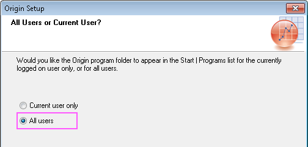

FAQ-1116 Was sollte ich tun, wenn ich nach der Installation von Origin die Fehlermeldung "Speicherort ist nicht verfügbar" sehe?
Access-Is-Denied
Letztes Update: 30.12.2021
Wenn Sie die Fehlermeldung "Speicherort ist nicht verfügbar" sehen, nachdem Sie Origin installiert haben:
C:\Users\username\AppData\Roaming\Microsoft\Windows\StartMenu\Programs\OriginLab Origin #### is not accessible.
Access is denied. (Zugriff verweigert)

Das liegt daran, dass Sie Origin nicht mit dem Konto eines Administrators installiert und ausgewählt haben, es nur für den aktuellen Benutzer zu installieren. Das heißt:
- Bei Windows mit einem Nicht-Admin-Konto angemeldet
- . Klicken Sie mit der rechten Maustaste auf das setup.exe von Origin und wählen Sie Als Administrator ausführen. Mit einem Admin-Konto angemeldet.
- Gehen Sie gemäß dem Installationsassistenten vor. Wählen Sie auf der Seite Alle Benutzer oder aktueller Benutzer?' die Option Nur aktueller Benutzer.
- Dies ist der Schritt, der das Problem verursacht hat. Zu diesem Zeitpunkt betrachtete das Installationsprogramm das Admin-Konto als "Aktuellen Benutzer" und nicht als die Person, die Sie aktuell angemeldet hatten. Die Shortcuts werden im Ordner des Admin-Kontos
C:\Users\<AdminUserName>\AppData\Roaming\Microsoft\Windows\StartMenu\Programs\OriginLab Origin2022 erstellt und können nicht über den aktuellen Nicht-Admin-Account geöffnet werden.
- Klicken Sie doppelt auf das setup.exe von Origin, um den Installationsassistenten von Origin zu starten.
- Wählen Sie Programm reparieren/Upgrade.
- Auf der Seite Alle Benutzer oder aktueller Benutzer? wählen Sie Alle Benutzer.
- 
Schlüsselwörter:Speicherort nicht verfügbar, kein Zugriff, kein Admin-Konto, Zugriff verweigert, falsch angemeldeter Benutzer